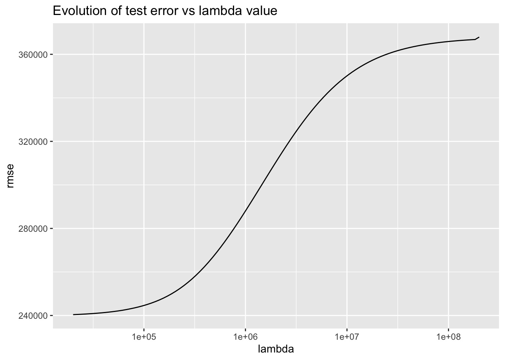

Last updated: 2022-04-05
Checks: 7 0
Knit directory: stat34800/analysis/
This reproducible R Markdown analysis was created with workflowr (version 1.7.0). The Checks tab describes the reproducibility checks that were applied when the results were created. The Past versions tab lists the development history.
Great! Since the R Markdown file has been committed to the Git repository, you know the exact version of the code that produced these results.
Great job! The global environment was empty. Objects defined in the global environment can affect the analysis in your R Markdown file in unknown ways. For reproduciblity it’s best to always run the code in an empty environment.
The command set.seed(20180411) was run prior to running the code in the R Markdown file. Setting a seed ensures that any results that rely on randomness, e.g. subsampling or permutations, are reproducible.
Great job! Recording the operating system, R version, and package versions is critical for reproducibility.
Nice! There were no cached chunks for this analysis, so you can be confident that you successfully produced the results during this run.
Great job! Using relative paths to the files within your workflowr project makes it easier to run your code on other machines.
Great! You are using Git for version control. Tracking code development and connecting the code version to the results is critical for reproducibility.
The results in this page were generated with repository version 9a45ef3. See the Past versions tab to see a history of the changes made to the R Markdown and HTML files.
Note that you need to be careful to ensure that all relevant files for the analysis have been committed to Git prior to generating the results (you can use wflow_publish or wflow_git_commit). workflowr only checks the R Markdown file, but you know if there are other scripts or data files that it depends on. Below is the status of the Git repository when the results were generated:
Ignored files:
Ignored: .Rhistory
Ignored: .Rproj.user/
Untracked files:
Untracked: analysis/currency_analysis.Rmd
Untracked: analysis/haar.Rmd
Untracked: analysis/stocks_analysis.Rmd
Untracked: data/kc_house_data.csv
Note that any generated files, e.g. HTML, png, CSS, etc., are not included in this status report because it is ok for generated content to have uncommitted changes.
These are the previous versions of the repository in which changes were made to the R Markdown (analysis/regularization.Rmd) and HTML (docs/regularization.html) files. If you’ve configured a remote Git repository (see ?wflow_git_remote), click on the hyperlinks in the table below to view the files as they were in that past version.
| File | Version | Author | Date | Message |
|---|---|---|---|---|
| Rmd | 9a45ef3 | Matthew Stephens | 2022-04-05 | workflowr::wflow_publish(“regularization.Rmd”) |
I took this code illustrating regularization from https://www.r-bloggers.com/2017/07/machine-learning-explained-regularization/
My intention here is to run the code and show the figures it produced (since the plots are not shown in the html above). I had to move the require(ggplot2) command to the top of the code get it to run. I also added a plot of the L1 coefficients because that was missing from the code. I downloaded the data from https://www.kaggle.com/datasets/harlfoxem/housesalesprediction?resource=download
Unfortunately the graphical results do not seem to match the description in the text in the html. For example, there does not seem to be any need for regularization: the lowest error in the CV occurs at or near the least squares solution. I do not know the reason for this.
require(data.table)Loading required package: data.tableWarning: package 'data.table' was built under R version 4.1.1require(glmnet)Loading required package: glmnetWarning: package 'glmnet' was built under R version 4.1.1Loading required package: MatrixLoaded glmnet 4.1-3require(ggplot2)Loading required package: ggplot2Warning: package 'ggplot2' was built under R version 4.1.1set.seed(123)
###reading data
housingData=fread('../data/kc_house_data.csv')
##Removing non numeric var
housingData[,floors:=as.numeric(floors)][,c('zipcode','lat','long','id','date','sqft_basement'):=NULL]
###Splitting data
indexTrain=sample.int(nrow(housingData),nrow(housingData)*0.005)
##no Reg
lmNoReg=lm(price~.,housingData[indexTrain])
summary(lmNoReg)
Call:
lm(formula = price ~ ., data = housingData[indexTrain])
Residuals:
Min 1Q Median 3Q Max
-329868 -109393 -19223 78141 891663
Coefficients: (1 not defined because of singularities)
Estimate Std. Error t value Pr(>|t|)
(Intercept) 4.617e+06 1.997e+06 2.312 0.02296 *
bedrooms -3.024e+04 3.179e+04 -0.951 0.34389
bathrooms 7.125e+04 6.078e+04 1.172 0.24405
sqft_living 4.155e+01 6.850e+01 0.607 0.54564
sqft_lot -1.188e+00 1.016e+00 -1.170 0.24493
floors 4.427e+04 5.359e+04 0.826 0.41080
waterfront NA NA NA NA
view 9.330e+04 3.734e+04 2.499 0.01421 *
condition 3.881e+04 3.003e+04 1.292 0.19944
grade 9.142e+04 3.126e+04 2.925 0.00432 **
sqft_above 4.036e+01 5.998e+01 0.673 0.50267
yr_built -2.710e+03 1.016e+03 -2.668 0.00899 **
yr_renovated 1.234e+02 4.521e+01 2.730 0.00755 **
sqft_living15 7.727e+01 5.408e+01 1.429 0.15634
sqft_lot15 -7.130e-01 1.981e+00 -0.360 0.71968
---
Signif. codes: 0 '***' 0.001 '**' 0.01 '*' 0.05 '.' 0.1 ' ' 1
Residual standard error: 189400 on 94 degrees of freedom
Multiple R-squared: 0.6416, Adjusted R-squared: 0.592
F-statistic: 12.94 on 13 and 94 DF, p-value: 8.307e-16pred_no_reg=predict(lmNoReg,housingData[-indexTrain])Warning in predict.lm(lmNoReg, housingData[-indexTrain]): prediction from a
rank-deficient fit may be misleadingsqrt(mean((pred_no_reg-housingData[-indexTrain]$price)^2))[1] 239795.3plotCoeffEvolution=function(penalizedGlm,type='L1')
{
lambda=penalizedGlm$lambda
coeff=as.matrix(penalizedGlm$beta)
rowName=rownames(coeff)
coeff=data.table(coeff)
coeff[,name:=rowName]
coeff=melt(coeff,id.vars = 'name')
coeff[,variable:=rep(lambda,each=length(unique(name)))]
ggplot(coeff,aes(x=variable,y=value,color=name))+geom_line()+xlab(paste0(type,' regularisation'))+ylab('Value of coefficient')+scale_x_log10()
}
##Different L1 regularisation
fit = glmnet(as.matrix(housingData[indexTrain,-c('price'),with=F]),as.matrix(housingData[indexTrain]$price) , family="gaussian",alpha=1)
pred_L1_reg=data.table(predict(fit,as.matrix(housingData[-indexTrain,-c('price'),with=F])))
RMSE_L1=sqrt(apply(pred_L1_reg[,(.SD-housingData[-indexTrain]$price)^2,.SD=1:ncol(pred_L1_reg)],2,mean))
DF_plot=data.frame(lambda=fit$lambda,rmse=RMSE_L1)
plotCoeffEvolution(fit,'L1') # I added this lineggplot(DF_plot,aes(x=lambda,y=rmse))+geom_line()+ggtitle("Evolution of test error vs lambda value")+scale_x_log10()require(plotly)Loading required package: plotlyWarning: package 'plotly' was built under R version 4.1.1
Attaching package: 'plotly'The following object is masked from 'package:ggplot2':
last_plotThe following object is masked from 'package:stats':
filterThe following object is masked from 'package:graphics':
layout## L2 regularisation
fit = glmnet(as.matrix(housingData[indexTrain,-c('price'),with=F]),as.matrix(housingData[indexTrain]$price) , family="gaussian",alpha=0)
pred_L2_reg=data.table(predict(fit,as.matrix(housingData[-indexTrain,-c('price'),with=F])))
RMSE_L2=sqrt(apply(pred_L2_reg[,(.SD-housingData[-indexTrain]$price)^2,.SD=1:ncol(pred_L2_reg)],2,mean))
DF_plot=data.frame(lambda=fit$lambda,rmse=RMSE_L2)
plotCoeffEvolution(fit,'L2')require(ggplot2)
ggplot(DF_plot,aes(x=lambda,y=rmse))+geom_line()+ggtitle("Evolution of test error vs lambda value")+scale_x_log10()
##Different L1L2 regularisation
fit = glmnet(as.matrix(housingData[indexTrain,-c('price'),with=F]),as.matrix(housingData[indexTrain]$price) , family="gaussian",alpha=0.03)
pred_L1L2_reg=data.table(predict(fit,as.matrix(housingData[-indexTrain,-c('price'),with=F])))
RMSE_L1L2=sqrt(apply(pred_L1L2_reg[,(.SD-housingData[-indexTrain]$price)^2,.SD=1:ncol(pred_L1L2_reg)],2,mean))
DF_plot=data.frame(lambda=fit$lambda,rmse=RMSE_L1L2)
plotCoeffEvolution(fit,'Elastic')require(ggplot2)
ggplot(DF_plot,aes(x=lambda,y=rmse))+geom_line()+ggtitle("Evolution of test error vs lambda value")+scale_x_log10()
sessionInfo()R version 4.1.0 Patched (2021-07-20 r80657)
Platform: aarch64-apple-darwin20 (64-bit)
Running under: macOS Monterey 12.2
Matrix products: default
BLAS: /Library/Frameworks/R.framework/Versions/4.1-arm64/Resources/lib/libRblas.0.dylib
LAPACK: /Library/Frameworks/R.framework/Versions/4.1-arm64/Resources/lib/libRlapack.dylib
locale:
[1] en_US.UTF-8/en_US.UTF-8/en_US.UTF-8/C/en_US.UTF-8/en_US.UTF-8
attached base packages:
[1] stats graphics grDevices utils datasets methods base
other attached packages:
[1] plotly_4.10.0 ggplot2_3.3.5 glmnet_4.1-3 Matrix_1.3-4
[5] data.table_1.14.2
loaded via a namespace (and not attached):
[1] shape_1.4.6 tidyselect_1.1.1 xfun_0.28 purrr_0.3.4
[5] splines_4.1.0 lattice_0.20-45 colorspace_2.0-2 vctrs_0.3.8
[9] generics_0.1.1 viridisLite_0.4.0 htmltools_0.5.2 yaml_2.2.1
[13] utf8_1.2.2 survival_3.2-13 rlang_0.4.12 jquerylib_0.1.4
[17] later_1.3.0 pillar_1.6.4 glue_1.5.0 withr_2.4.2
[21] DBI_1.1.1 bit64_4.0.5 foreach_1.5.1 lifecycle_1.0.1
[25] stringr_1.4.0 munsell_0.5.0 gtable_0.3.0 workflowr_1.7.0
[29] htmlwidgets_1.5.4 codetools_0.2-18 evaluate_0.14 labeling_0.4.2
[33] knitr_1.36 fastmap_1.1.0 httpuv_1.6.3 fansi_0.5.0
[37] highr_0.9 Rcpp_1.0.7 promises_1.2.0.1 scales_1.1.1
[41] jsonlite_1.7.2 farver_2.1.0 bit_4.0.4 fs_1.5.0
[45] digest_0.6.28 stringi_1.7.5 dplyr_1.0.7 grid_4.1.0
[49] rprojroot_2.0.2 tools_4.1.0 magrittr_2.0.2 lazyeval_0.2.2
[53] tibble_3.1.6 tidyr_1.1.4 crayon_1.4.2 whisker_0.4
[57] pkgconfig_2.0.3 ellipsis_0.3.2 httr_1.4.2 assertthat_0.2.1
[61] rmarkdown_2.11 iterators_1.0.13 R6_2.5.1 git2r_0.29.0
[65] compiler_4.1.0